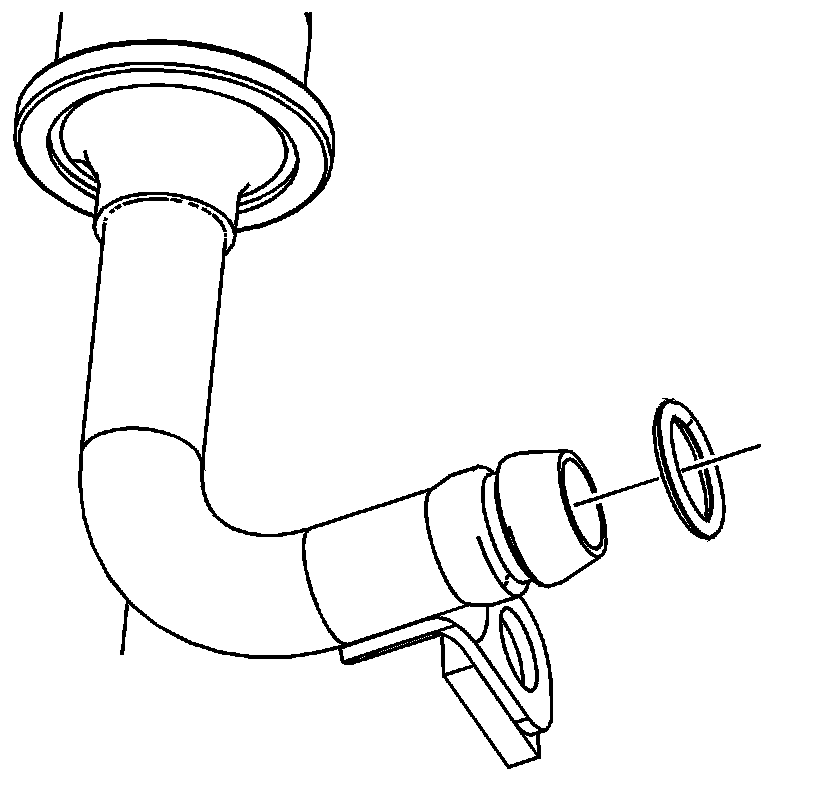

Oil Pump Outlet Tube Replacement
Oil Pump Outlet Tube Replacement
Tools Required
J 39946 Crankshaft Socket
Removal Procedure
1. Remove the oil pump. Refer to Oil Pump Replacement (Oil Pump Replacement) .

2. Align the primary timing marks (1) using the J 39946 .
3. Remove the secondary camshaft drive chains. Refer to Secondary Camshaft Drive Chain Replacement - Right Side (Secondary Camshaft Drive Chain Replacement - Right) and Secondary Camshaft Drive Chain Replacement - Left Side (Secondary Camshaft Drive Chain Replacement - Left) .
4. Remove the primary drive chain tensioner. Refer to Primary Camshaft Drive Chain Tensioner Replacement (Primary Camshaft Drive Chain Tensioner Replacement) .

5. Remove the oil outlet tube bolts (1-5).
6. Remove the oil outlet tube.

7. Remove and discard the oil outlet tube O-ring.
8. Clean and inspect the oil outlet tube. Refer to Oil Pump Outlet Tube Cleaning and Inspection (Overhaul) .
Installation Procedure
1. Install a NEW O-ring on the oil outlet tube.
2. Install the oil outlet tube and bolts.
Tighten the oil outlet tube bolts to 10 N.m (89 lb in).
3. Ensure the primary timing marks (1) are aligned vertically.
4. Install the primary drive chain tensioner. Refer to Primary Camshaft Drive Chain Tensioner Replacement (Primary Camshaft Drive Chain Tensioner Replacement) .
5. Install the secondary camshaft drive chains. Refer to Secondary Camshaft Drive Chain Replacement - Left Side (Secondary Camshaft Drive Chain Replacement - Left) and Secondary Camshaft Drive Chain Replacement - Right Side (Secondary Camshaft Drive Chain Replacement - Right) .
6. Install the oil pump. Refer to Oil Pump Replacement (Oil Pump Replacement) .